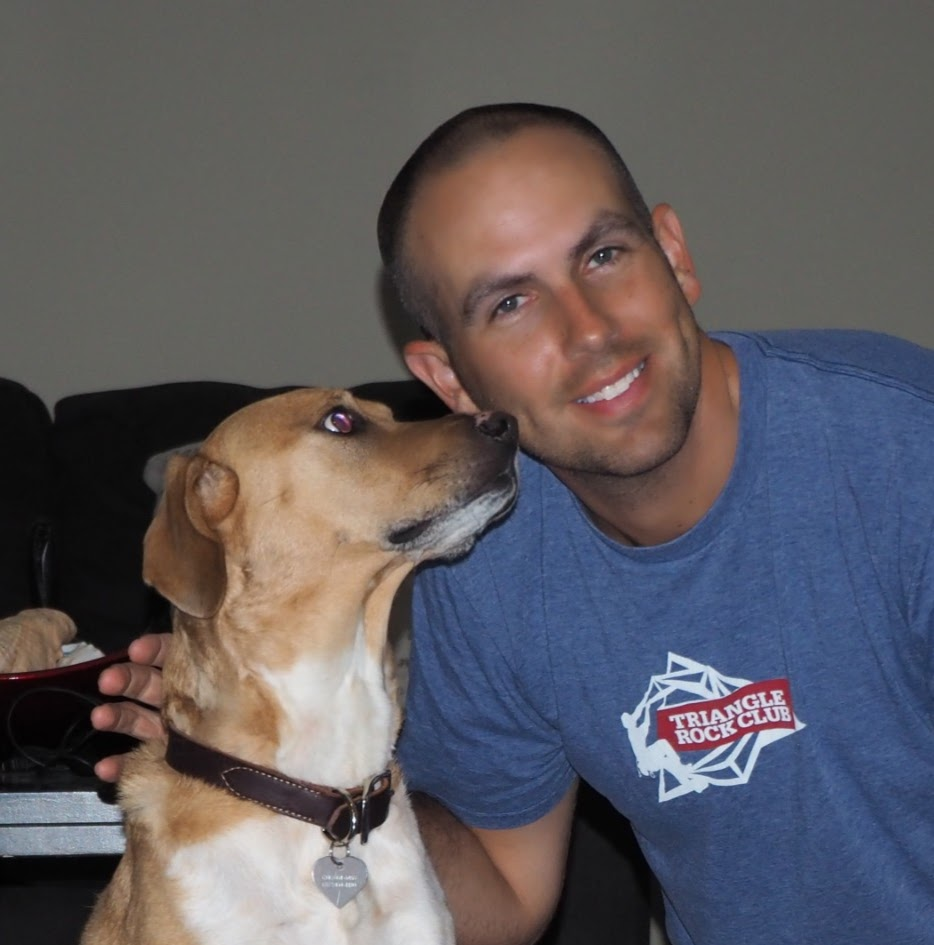

About Me

I am a Medical Laboratory Scientist, rower, photographer, and aspiring web developer. Born in the mountains of North Carolina, I was raised to appreciate the great outdoors. I attended NC State University and UNC Chapel Hill before beginning my career in healthcare. I currently work in MinuteClinic Lab Operations for CVS Health, while attending UNC Coding Bootcamp.
I began rowing and rock climbing in 2014 and it has truly changed the way I view the world. I now coach and referee rowing for a youth club, and recently began sport and nature photography. I also enjoy playing tennis, board games, and riding my motorcycle.